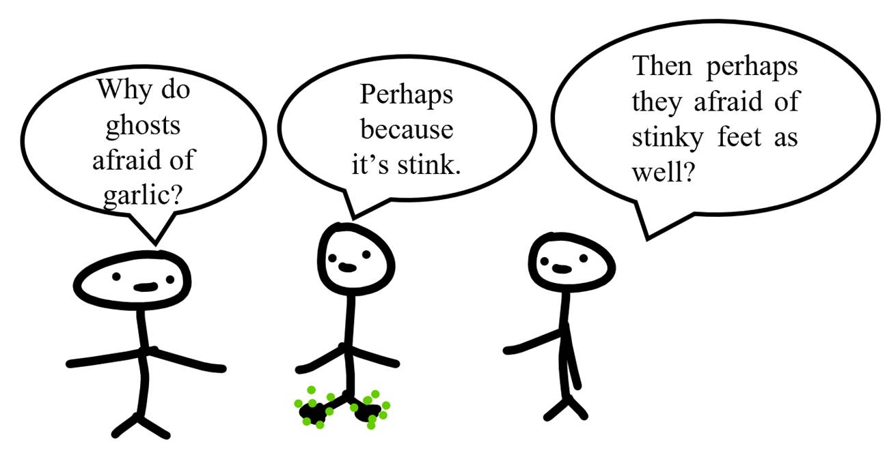

Whenever
I hear ghost stories, I usually get very curious about lives after death, and I
started to Google everything: Why do ghosts scare of garlic? Do vampires really
exist? Can dogs really see ghosts? But
no one can ever really give an answer that satisfies my curiosity. Well, yep,
they're not dead yet.

So,
I guess I should search for an answer from Google of the dead world instead.
But the question is, does that exist? Because Google has not died yet And that
brings me an idea, should I have a startup on a search engine like Google after
I die? Why not? Let's call it Noodle.
My
Noodle search engine will be created based on a recommender system.
Recommendation systems are well known for their usage on websites. For example,
when you go to Spotify, you see many recommended songs and playlists; or when
you go to Netflix, you see a lot of recommended movies, etc. They are all based
on recommendation systems, which recommend to users
things that they may be interested in. Successful recommendation, of course,
will turn into a lot of revenue. That's why Netflix created the one million
dollars Netflix Prize, an open competition for the best Algorithm to predict
user ratings for films based on information like previous user ratings for the
movies and other user and movie information.
Back
to my Noodle search engine, when a user searches with a keyword, it needs to
return a list of results, ranked in order of relevancy and quality. If this is
a new user, then I probably don't know much about he/she other than her
approximate location, language,. Yet,
even this information is already useful. For example, when a ghost searches for
places to eat in Vietnam, the returned results should differ from a ghost
searching for those keywords in Norway or New York.
Noodle also needs to care about a pages quality. How do
I know if a website has high-quality content? One way is to measure how many
websites include a link to this page. This is pretty much like in real life,
where famous people usually get more attention. Yep, but ghost
can generate a bunch of websites that include a link to his own website brilliant.ghost just to
cheat the Algorithm. So, the search engine should also consider the time a
visitor spends at a website as an important factor in ranking the pages.
How
about new content? How do I evaluate its quality even though I don't know how
much time the ghosts will spend at these pages yet?
That depends on the domain of that page. For example, MrDracula.lalala
is a popular website. Then perhaps MrDracula.lalala/orangejuice also have attractive content as well. But
that does not mean the not-so-popular websites should be ignored. After
ensuring that it does not contain junk information/dangerous viruses by some
spam filter, I would recommend such a page to some users (maybe not in the
first five results). If they like it, the page is probably useful, and I would
recommend it to more users, at possibly a higher rank in the returned result
list. Otherwise, I will just ignore it most of the time or push its rank lower.
Another
thing to care about is the value of the contents over time. Many things stay
good over time, but not all of the time. For example, a website
that gives advice to the ghosts on what to do when
they accidentally eat garlic may stay useful over time (maybe until the ghosts
are DNA modified so that they are no longer afraid of garlic anymore). Yet, a
page on pop music band G may not stay hot if the band has already retired due
to changing music trends in the society.
But most importantly, how does
Noodle understand what you are searching for? Oh! Im sorry, youre not a
ghost, or at least not yet!!! Also, a word/phrase can be rephrased
differently with the same meaning. How can Noodle know that to select the best
relevant results? Well, now we have to talk about
Neural Network, an Artificial Intelligence technique, and Natural
Language Processing, a branch of
Computer Science that try to make the computer understand texts and spoken
words in pretty much the same way human do.
The
stuff that powers a lot of technologies right now is Artificial Neural Networks,
or simply Neural Networks. It's inspired by how our brain process information.
For example, if we look at an image. Then, after receiving the signals, the
neurons will extract the important signals and send them via the synapses to
the brain
Figure 1
A
neural network is inspired by this, and it contains many layers. Each layer is
a set of neurons. In figure 2 below, each neuron is denoted by a round cake.
The neurons in one layer are connected to the ones in the other nearby layer by
the connections (similar to synapses in the human
body). Each connection is represented by a line:
Figure 2
Note that the input layer is in the yellow frame in the above
neural network of cakes. When the data comes, the input layer will grab it
first (ghost cakes, able-to-eat stuff). After that, each neuron in the layer
will do some transformation (swallow) before passing it to the next layer. The next layer contains the neurons
in the red frame right next to the yellow frame. We call it a hidden layer. (Any layer between the input and the
output layer is called a hidden layer. There are two hidden layers in this
case.) Again, each neuron in
this layer will transform the incoming information from the previous layer. So,
you can imagine these layers as the digestion systems of this cake neural
network. Finally, the
transformed information reaches the output layer, where things end. The output
layer will give us the information that lets us know what we are looking at:
cats/dogs/bunnies/cherries/.
That's
the idea. But, at first, the neural network does not work that well. It's like
a newborn baby who knows very little about the world. So, we need to teach it. We teach it
via a loss function and an optimization method to minimize the loss. This
is similar to how a baby learns to walk, getting the
pain but getting better and less pain, i.e., minimizing the pain and the number
of collapses. But why a loss function, not a benefit
function? Probably because people are usually risk-averse, so they like this term more. Anyway, not everyone is
willing to take a vaccine, even if it's safe 99% of the time, but 1% of the
time causes blood clots and may lead to death!